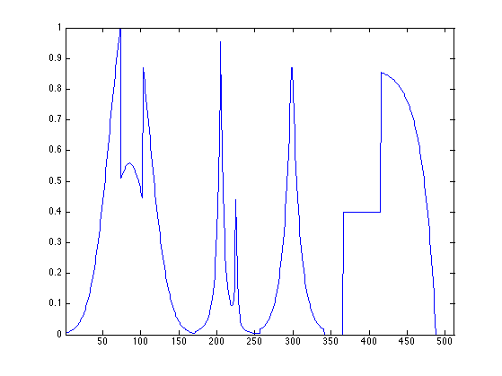
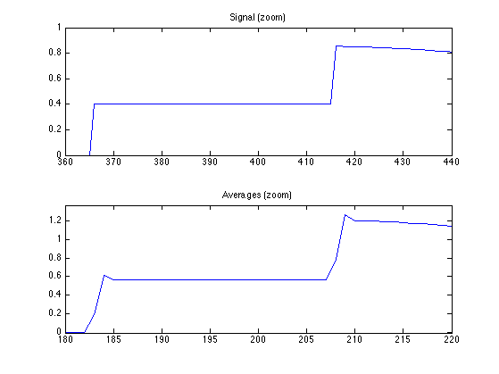
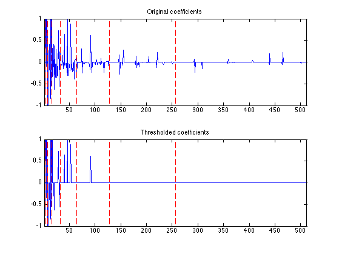
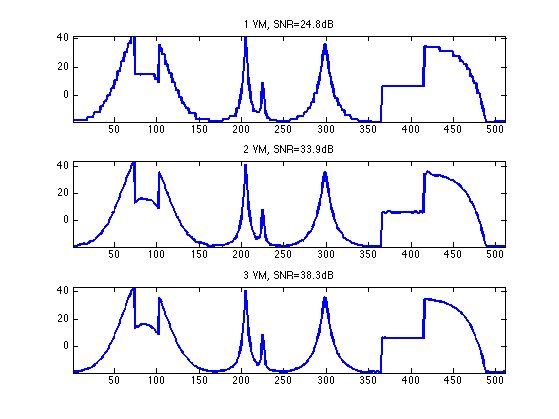
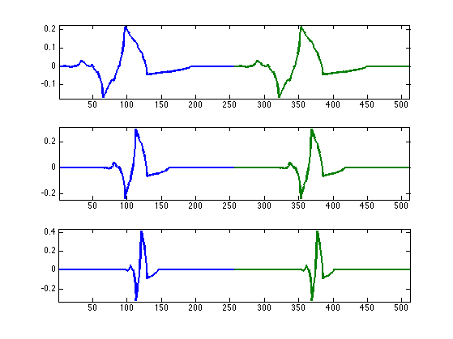

1-D Daubechies Wavelets
This numerical tour explores 1-D multiresolution analysis with Daubechies wavelets with a varying number of vanishing moments (varying order).
Contents
Installing toolboxes and setting up the path.
You need to download the following files: signal toolbox and general toolbox.
You need to unzip these toolboxes in your working directory, so that you have toolbox_signal and toolbox_general in your directory.
For Scilab user: you must replace the Matlab comment '%' by its Scilab counterpart '//'.
Recommandation: You should create a text file named for instance numericaltour.sce (in Scilab) or numericaltour.m (in Matlab) to write all the Scilab/Matlab command you want to execute. Then, simply run exec('numericaltour.sce'); (in Scilab) or numericaltour; (in Matlab) to run the commands.
Execute this line only if you are using Matlab.
getd = @(p)path(p,path); % scilab users must *not* execute this
Then you can add the toolboxes to the path.
getd('toolbox_signal/'); getd('toolbox_general/');
Wavelets Filters
The 2-D wavelet transform of a continuous signal \(f(x)\) computes the set of inner products \[ d_j[n] = \dotp{f}{\psi_{j,n}} \] for scales \( j \in \ZZ \) and position \( n \in \ZZ \).
The wavelet atoms are defined by scaling and translating a mother atom \( \psi(x) \): \[ \psi_{j,n}(x) = \frac{1}{2^j}\psi\pa{\frac{x-2^j n}{2^j}}. \]
Associated to this oscillating (high pass) wavelet function \(\psi\) is a non-oscillating (low pass) scaling function \(\phi\).
The fast wavelet transform algorithm does not make use of the wavelet and scaling functions, but of the filters \(h\) and \(g\) that caracterize their interaction: \[ g[n] = \frac{1}{\sqrt{2}}\dotp{\psi(x/2)}{\phi(x-n)} \qandq h[n] = \frac{1}{\sqrt{2}}\dotp{\phi(x/2)}{\phi(x-n)}. \]
The simplest filters are the Haar filters \[ h = [1, 1]/\sqrt{2} \qandq g = [-1, 1]/\sqrt{2}. \]
Daubechies wavelets extends the haar wavelets by using longer filters, that produce smoother scaling functions and wavelets. Furthermore, the larger the size \(p=2k\) of the filter, the higher is the number \(k\) of vanishing moment.
A high number of vanishing moments allows to better compress regular parts of the signal. However, increasing the number of vanishing moments also inceases the size of the support of the wavelets, wich can be problematic in part where the signal is singular (for instance discontinuous).
Choosing the best wavelet, and thus choosing \(k\), that is adapted to a given class of signals, thus corresponds to a tradeoff between efficiency in regular and singular parts.
- The filter with \(k=1\) vanishing moments corresponds to the Haar filter.
- The filter with \(k=2\) vanishing moments corresponds to the famous D4 wavelet, which compresses perfectly linear signals.
- The filter with \(k=3\) vanishing moments compresses perfectly quadratic signals.
Set the support size. To begin, we select the D4 filter.
p = 4;
Create the low pass filter \(h\) and the high pass \(g\). We add a zero to ensure that it has a odd length. Note that the central value of \(h\) corresponds to the 0 position.
[h,g] = compute_wavelet_filter('Daubechies',p);
Note that the high pass filter \(g\) is computed directly from the low pass filter as: \[g[n] = (-1)^{1-n}h[1-n]\]
Display.
disp(['h filter = [' num2str(h) ']']); disp(['g filter = [' num2str(g) ']']);
h filter = [0 0.48296 0.83652 0.22414 -0.12941] g filter = [0 -0.12941 -0.22414 0.83652 -0.48296]
Up and Down Filtering
The basic wavelet operation is low/high filtering, followed by down sampling.
Starting from some 1-D signal \(f \in \RR^N\), one thus computes the low pass signal \(a \in \RR^{N/2}\) and the high pass signal \(d \in \RR^{N/2}\) as \[ a = (f \star h) \downarrow 2 \qandq d = (f \star g) \downarrow 2\] where the sub-sampling is defined as \[ (u \downarrow 2)[k] = u[2k]. \]
Create a random signal \(f \in \RR^N\).
N = 256; f = rand(N,1);
Low/High pass filtering followed by sub-sampling.
a = subsampling( cconv(f,h) ); d = subsampling( cconv(f,g) );
For orthogonal filters, the reverse of this process is its dual (aka its transpose), which is upsampling followed by low/high pass filtering with the reversed filters and summing: \[ (a \uparrow h) \star \tilde h + (d \uparrow g) \star \tilde g = f \] where \(\tilde h[n]=h[-n]\) (computed modulo \(N\)) and \( (u \uparrow 2)[2n]=u[n] \) and \( (u \uparrow 2)[2n+1]=0 \).
Up-sampling followed by filtering.
f1 = cconv(upsampling(a),reverse(h)) + cconv(upsampling(d),reverse(g));
Check that we really recover the same signal.
disp(strcat((['Error |f-f1|/|f| = ' num2str(norm(f-f1)/norm(f))])));
Error |f-f1|/|f| = 5.4681e-13
Forward Wavelet Transform
The set of wavelet coefficients are computed with a fast algorithm that exploit the embedding of the approximation spaces \(V_j\) spanned by the scaling function \( \{ \phi_{j,n} \}_n \).
First we load a 1-D signal.
name = 'piece-regular';
N = 512;
f = rescale( load_signal(name, N) );
Display it.
clf;
plot(f);
axis('tight');
 We will store all the transformed coefficients \(d_j\) in a single vector fw. This vector is initialized as f and the left sub-part fw(1:1^j) of fw will be retransformed at each iteration for a decreasing scale index j.
Initialize the result vector.
fw = f;
Initialize the scale index \(j\) as \( j = J = \log_2(N)-1 \).
j = log2(N)-1;
The wavelet transform of \(f\) is computed by using intermediate discretized low resolution images obtained by projection on the spaces \(V_j\): \[ a_j[n] = \dotp{f}{\phi_{j,n}}. \]
The algorithm processes by moving from scale \(j\) to the coarser scale \(j-1\) using the filtering+sub-sampling: \[ a_{j-1} = (a_j \star h) \downarrow 2 \qandq d_{j-1} = (a_j \star g) \downarrow 2\]
Retrieve the coefficients \(a_j\) from the variable fw and store them in the variable a1
a1 = fw(1:2^(j+1));
Apply high and low filtering+subsampling to obtain \(a_{j-1}\) and \(d_{j-1}\) (stored in a and d).
a = subsampling(cconv(a1,h)); d = subsampling(cconv(a1,g));
Note: subsampling(A) is equivalent to A(1:2:end).
Concatenate them to get the result and store it in fw.
fw(1:2^(j+1)) = cat(1, a, d );
Display the result of the first step of the transform.
clf; subplot(2,1,1); plot(f); axis('tight'); title('Signal'); subplot(2,1,2); plot(fw); axis('tight'); title('Transformed');

Display the signal and its coarse coefficients.
s = 400; t = 40; clf; subplot(2,1,1); plot(f,'.-'); axis([s-t s+t 0 1]); title('Signal (zoom)'); subplot(2,1,2); plot(a,'.-'); axis([(s-t)/2 (s+t)/2 min(a) max(a)]); title('Averages (zoom)');
Exercice 1: (check the solution) Implement a full wavelet transform that extract iteratively wavelet coefficients, by repeating these steps. Take care of choosing the correct number of steps.
exo1;

Check that the transform is orthogonal, which means that the energy of the coefficient is the same as the energy of the signal.
disp(strcat(['Energy of the signal = ' num2str(norm(f).^2,3)])); disp(strcat(['Energy of the coefficients = ' num2str(norm(fw).^2,3)]));
Energy of the signal = 88.6 Energy of the coefficients = 88.6
We display the whole set of coefficients fw, with red vertical separator between the scales. Can you recognize where are the low frequencies and the high frequencies ? You can use the function plot_wavelet to help you.
clf; plot_wavelet(fw); axis([1 N -1 1]);

Backward Wavelet Transform
The backward wavelet transform reconstructs a signal \( f \) from a set of wavelet coeffcients \( \{ d_j[n] \}_{j,n} \). For continuous functions, it corresponds to the following reconstruction formula: \[ f(x) = \sum_{j,n} d_j[n] \psi_{j,n}(x). \]
For discrete signal, it reconstructs a signal \( f \in \RR^N \) by inverting the wavelet filtering/sub-sampling steps.
It starts from the coarsest scale \( j=0 \), where \( a_0 \in \RR \) is the single remaining coefficient.
The algorithm processes by moving from scale \(j\) to the finer scale \(j+1\) using the up-sampling/filtering: \[ a_{j+1} = (a_j \uparrow 2) \star \tilde h + (d_j \uparrow 2) \star \tilde g \]
Initialize the signal to recover f1 as the transformed coefficient, and select the smallezt possible scale.
f1 = fw; j = 0;
Retrieve coarse and detail coefficients in the vertical direction.
a = f1(1:2^j); d = f1(2^j+1:2^(j+1));
Perform the up-sampling/filtering and summation:
a = cconv(upsampling(a,1),reverse(h),1) + cconv(upsampling(d,1),reverse(g),1);
Replace the coefficients at the correct locations.
f1(1:2^(j+1)) = a;
Exercice 2: (check the solution) Write the inverse wavelet transform that computes f1 from the coefficients fw.
exo2;

Check that we have correctly recovered the signal.
disp(strcat((['Error |f-f1|/|f| = ' num2str(norm(f-f1)/norm(f))])));
Error |f-f1|/|f| = 4.0189e-12
Daubechies Wavelets Approximation
Non-linear approximation is obtained by thresholding low amplitude wavelet coefficients.
This defines the best \(M\)-terms approximation \(f_M\) of \(f\):
\[ f_M = \sum_{ \abs{\dotp{f}{\psi_{j,n}}}>T } \dotp{f}{\psi_{j,n}}\psi_{j,n}. \]
Set the threshold value.
T = .5;
Coefficients fw(i) smaller in magnitude than T are set to zero.
fwT = fw .* (abs(fw)>T);
Display the coefficients before and after thresholding.
clf; subplot(2,1,1); plot_wavelet(fw); axis([1 N -1 1]); title('Original coefficients'); subplot(2,1,2); plot_wavelet(fwT); axis([1 N -1 1]); title('Thresholded coefficients');
Exercice 3: (check the solution) Find the threshold \(T\) to obtained a given number \(M\) of non thresholded coefficients. Try for an increasing number \(M\) of coeffiients.
exo3;

Exercice 4: (check the solution) Try with Different kind of wavelets, with an increasing number of vanishing moments.
exo4;
The Shape of a Wavelet
A wavelet coefficient is an inner product \( d_j[n] = \dotp{f}{\psi_{j,n}} \) with a wavelet atom \(\psi_{j,n}\).
A wavelet atom \(\psi_{j_0,n_0}\) can be computed by applying the inverse wavele transform to coefficients \( \{d_j[n]\}_{j,n} \) such that \[ d_{j}[n]=\choice{ 1 \qifq j=j_0 \qandq n=n_0, \\ 0 \quad\text{otherwise.} } \]
Exercice 5: (check the solution) Compute wavelets at several positions and scales.
exo5;
Exercice 6: (check the solution) Display Daubechies wavelets with an increasing number of vanishing moments.
exo6;